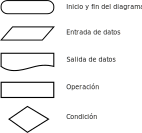
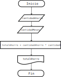
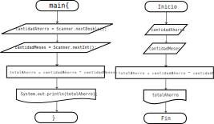

Table of Contents
1. Diagramas de flujo
Ya que TODOS los programas son algoritmos, y un algoritmo es básicamente una serie de pasos a seguir, podemos representar los algoritmos visualmente usando figuras conocidas como diagramas de flujo que conectamos su siguiente y anterior paso con líneas o flechas.

Figure 1: Simbología básica de un diagrama de flujo
1.1. Planteamiento de problemas con diagramas de flujo
Antes de empezar a escribir cualquier programa es muy importante tener claro qué es lo que se quiere hacer o resolver. Un programa siempre necesita una entrada y regresa una salida o resultado.
Recordemos los siguientes términos indispensables:
- Instruccion: Una operación a realizar en un programa. Por ejemplo, sumar 2 números.
- Algoritmo: Conjunto de instrucciones de inicio a fin con pasos finitos para resolver un problema.
- Programa: Conjunto de algoritmos para crear software que se dedique a resolver sus propósitos.
- Dato o valor: Un número, booleano, caracter, una cadena etc.
- Variable: El nombre de una cajita donde guardaremos un dato temporalmente.
El valor puede ser cualquier cosa. Por ejemplo, podemos guardar:
| NOMBRE | VALOR |
|---|---|
| Número entero | -4, 0, 1024, 2147483648 |
| Número decimal | 3.141592, 4.1, -3.233333 |
| Cadena de cáracteres | "Perro Salchicha", "Juan", "f" |
| Booleanos | true, false |
| Objetos | 0x34fd12 (Pendiente) |
NOTA En Java, los nombres de variables siempre empiezan en minúsculas también conocido como camelCase.
Naturalmente en programación crear nombres de variables que no sean significativos es muy mala idea. Si tenemos una variable llamada fechaDeNacimiento nos indica algo sobre una fecha, que si se tuviera fN no nos da mucha información de qué es lo que se guarda en esa variable, aunque para el programa sea lo mismo leer de fechaDeNacimiento o fN pero como humanos no es tan fácil adivinar. Lo mismo pasa para los nombres de clases.
Empecemos con un primer ejemplo de programación.
1.1.1. Problema 1
Crear un programa que calcule el ahorro total de $200 pesos cada mes durante 1 año
Debemos identificar datos que nos servirán para crear otros datos. De manera analítica un problema se puede dividir en 3 etapas. Tomando como ejemplo el problema anterior:
- Datos conocidos: Datos que se nos dan para resolver un problema.
- $200 pesos
- 1 mes
- 1 año = 12 meses
- Procesos: Operaciones a realizar con los datos como sumas
multiplicaciones, funciones, asignaciones, etc.
- Debemos multiplicar los meses del año por el monto de ahorro.
- Resultados: Saber en qué momento tenemos la respuesta al problema.
- La respuesta es $2400 al año.
Esta manera de dividir el problema puede ser a veces un poco difícil de visualizar, y en algoritmos más elaborados suele complicarse demasiado.
Nuestros algoritmos serán básicos (por ahora) y podemos representarlos fácilmente en un diagrama de flujo para entender cómo es que funciona paso a paso. El del anterior problema sería como:

Figure 2: Diagrama de flujo del problema 1
Así nuestro programa lo aterrizamos a un inicio, un proceso y un final. Podemos ver el orden en el que se ejecuta el programa, esto es de arriba hacia abajo. Explicaremos qué pasa en cada paso solo por esta vez, aunque se puede intuir.
- Inicio significa Ya se está ejecutando el programa.
- Trapecio 1 y 2 significa entrada de datos, donde recibimos los
datos que identificamos en datos conocidos, y los guardaremos en 2
variables donde damos un nombre significativo a cada variable
donde guardaremos ese dato
cantidadAhorroycantidadMesesrespectivamente. - Cuadrado significa operacion. Claramente un año tiene 12 meses, y si ahorramos $200 por cada mes, entonces la multiplicacion es el resultado.
- Figura rara significa salida de programa. Normalmente la salida de un programa es su valor de retorno, lo que se imprime en la pantalla o la respuesta a alguna acción de teclado/mouse. En este caso nuestra salida es el resultado de la multiplicación.
- Fin del programa significa ya no existe más este programa.
Nota: Debemos entender que si queremos hacer un buen programa, debemos generalizarlo; es decir que pueda funcionar con cualquier monto de ahorro y cualquier cantidad de meses, no solamente $200 y 12 meses, con la finalidad de que abarque más. Más adelante veremos lo que son los tests.
Todavía no hemos programado nada, esto es solo una representación visual para poder saber qué es lo que vamos a programar.
1.1.2. Código problema 1
Ahora sí programaremos. Creamos un archivo que se llame Ahorro.java;
lo abrimos para escribir lo siguiente. TODO símbolo por mínimo que
parezca es de suma importancia. NO SE PERIMTE COPIAR Y PEGAR ESTE
CÓDIGO CON CTRL-C CTRL-V NI NINGUN OTRO A MENOS QUE SE INDIQUE LO
CONTRARIO.
import java.util.Scanner; public class Ahorro { public static void main (String[] args){ Scanner input = new Scanner(System.in); double cantidadAhorro; int cantidadMeses; double totalAhorro; System.out.print("Ingresar la cantidad a ahorrar en punto decimal: "); cantidadAhorro = input.nextDouble(); System.out.print("Ingresar la cantidad de meses a ahorrar: "); cantidadMeses = input.nextInt(); totalAhorro = cantidadAhorro * cantidadMeses; System.out.print("El ahorro total es de: "); System.out.print(totalAhorro); } }
Lo compilamos y, si hay errores, debemos verificar que caracter por caracter esté exactamente igual que como está aquí. De lo contrario, lo ejecutamos con
$ java Ahorro
El programa nos pedirá añadir una cantidad a ahorrar en punto decimal, y luego ingresar la cantidad de meses, un valor numérico, al final la salida del programa será:
$ java Ahorro Ingresar la cantidad a ahorrar en punto decimal: 200.0 Ingresar la cantidad de meses a ahorrar: 12 El ahorro total es de: 2400.0
1.1.3. Explicación paso a paso problema 1.
Si te estás preguntando, ¿cómo es que el programa funciona?
Lo primero que tienes que saber, es que siempre, siempre, siempre la computadora no hará nada que no se le haya dicho que no haga. Todo el código lo sigue fielmente sin lugar a errores, entonces solo hay que entender que fue lo que hizo.
Recordatorio de que no se explicará a detalle de lupa y varios conceptos quedarán pendientes que se irán resolviendo al pasar el tiempo.
Embeces, necesitamos utilizar el código que alguien más ya programó, por ejemplo estamos usando
Scanner, que funciona para leer datos desde la terminal.import java.util.Scanner;
En java, TODO programa, código, algoritmo debe ir dentro de una clase, o sea un texto como el siguiente. La palabra
Ahorrocambiará, pero siempre empieza en mayúscula.public class Ahorro { ... }
Todo programa que se puede ejecutar debe tener de un método
maindentro de la clase, y debe ser exactamente así:public static void main (String[] args){ ... }
El método main es el primero que se ejecuta al momento de correr nuestro programa, también conocido como punto de entrada. Más adelante veremos qué signfica cada cosa, de que
publicstaticovoid, pero todo tiene su razón de ser.Todo lo que sigue va adentro del main, se ejecuta línea por línea de arriba hacia abajo. Es importante que quede claro estos 3 pasos anteriores. Lo siguiente es una pequeña explicación de la resolución del problema.
Creamos un objeto de la clase
Scannerpara poder leer datos a través de la terminal.Scanner input = new Scanner(System.in);
En java, un objeto es un tipo programa que existen y hacen cosas, tipo un árbol; plantamos un árbol y automáticamente tenemos aire limpio. De una manera más técnica, existen objetos que hacen cosas de computadoras, como conectarnos a un servidor en la red, crear videojuegos, o leer una imagen desde disco.
Creamos las variables donde guardaremos temporalmente los datos que conocemos.
double cantidadAhorro; int cantidadMeses; double totalAhorro;
Una variable en java siempre debe tener un tipo de dato definido, en este caso tenemos 2 tipos de dato:
doubleeint.doublepara números decimales, también conocidos como números de punto flotante ofloat. Los decimales son útiles cuando hablamos de dinero, peso (kg), distancias, tiempo, probabilidades etc.intpara números enteros, también conocidos como integer. Son útiles cuando hablamos de cantidades discretas, es decir cantidades que no se pueden dividir, por ejemplo contar ovejas, la edad, identificadres únicos, anillos en Z etc.
Mostramos un mensaje pidiendo un valor, y luego guardamos el valor variable a
cantidadAhorroSystem.out.print("Ingresar la cantidad a ahorrar en punto decimal: "); cantidadAhorro = input.nextDouble();Es importante el mensaje anterior, ya que de otra forma un usuario no sabría que información debería dar, que tal y pone su CURP. Al ser una variable decimal, significa que podemos poner cualquier valor decimal que queramos ahorrar en el futuro! ($13929.32 por ejemplo).
La otra línea es justamente la asignación de lo que escribimos en la terminal ahora adentro de nuestro programa. Como input es un objeto de la clase Scanner que alguien más programó, ese alguien hizo el método nextDouble() que sirve para leer números con punto decimal desde la terminal.
Hacemos lo mismo para guardar los meses con la diferencia de que estos datos son de tipo entero.
System.out.print("Ingresar la cantidad de meses a ahorrar: "); cantidadMeses = input.nextInt();La carnita del programa. Teniendo finalmente los datos conocidos dentro de nuestro programa, procedemos a efectuar la operación de multiplicación, ya que es la suma continua n veces.p
totalAhorro = cantidadAhorro * cantidadMeses;
Cerramos nuestro objeto que lee desde la terminal, es decir que ya no leeremos más información desde la terminal con este objeto.
input.close();
Finalmente mostramos en la terminal el mensaje que se encuentra dentro de comillas, además de que mostramos también el resultado de la operación.
System.out.print("El ahorro total es de: "); System.out.println(totalAhorro);System.out.print()es un método para imprimir en la terminal. Puedes suponer que es como una impresora la pantalla, y cada nueva información que se deba imprimir, se va agregando a la terminal hacia arriba, como una impresora lo haría.La diferencia entre
System.out.print()ySystem.out.println()es que el segundo agrega automáticamente un salto de línea al final, es decir, pasa a la siguiente línea (impresora) mientras que el primero se queda donde imprimió el último caracter (máquina de escribir).
Prueba ahora tu programa con otras entradas! ¿Qué pasa si pasamos un texto en lugar de número de meses?
1.1.4. Relación entre el diagrama de flujo y código
Podemos ver una relación entre el código y el diagrama anteriormente realizado. Algunas partes están en el programa tal cual y otras no se especifican:

Figure 3: Diagrama vs código
Por ejemplo, en el diagrama nunca se especificó la definición de variables.
double cantidadAhorro; int cantidadMeses; double totalAhorro;
Tampoco la creación del objeto Scanner.
Scanner input = new Scanner(System.in);
Ni mucho menos los mensajes de qué valores ingresar o cuando ya se tiene el resultado.
System.out.print("Ingresar la cantidad a ahorrar en punto decimal: ");
Es parte de la resolución de problemas saber qué cosas adicionales necesitamos para que nuestro programa pueda resolver el problema planteado. Una cosa es el problema, y otra es cómo resolver ese problema. Son dos cosas muy diferentes, incluso muchas veces hay problemas que no tienen solución.
Por ejemplo, un problema puede ser:
Crear un programa que pueda pasar texto a voz.
El problema es claro, qué tenemos de entrada y que queremos de salida. Pero en donde se imagina, desarrolla y aterriza el problema es exactamente en el código. Debemos encontrar un puente entre lo que queremos y lo que entienden las computadoras, es decir, instrucciones paso a paso. Esta parte es la que se practicará durante este curso.